If you've got a few sheets of paper and five minutes to spare, you're about to make some seriously happy little crafters. These 5 minute crafts with paper easy enough for tiny hands are perfect for those moments when your kids need a creative outlet and you need something that won't take all afternoon. Below you'll find 15 adorable ideas that toddlers and preschoolers can make with minimal help and maximum pride.
What You'll Need
Most of these projects use the same handful of basic supplies you probably already have at home.
- Construction paper (assorted colors)
- Glue sticks
- Washable markers or crayons
- Child-safe scissors
- Pencil
15 Adorable Paper Craft Ideas
1. Paper Strip Caterpillar
Cut colorful paper strips into loops and link them together to create an adorable caterpillar chain. Kids love picking out different colors for each body segment. Add googly eyes or draw a cute face on the first loop, and you've got a wiggly new friend. This is one of the best simple 5 minute paper crafts for toddlers because it doubles as fine motor practice.
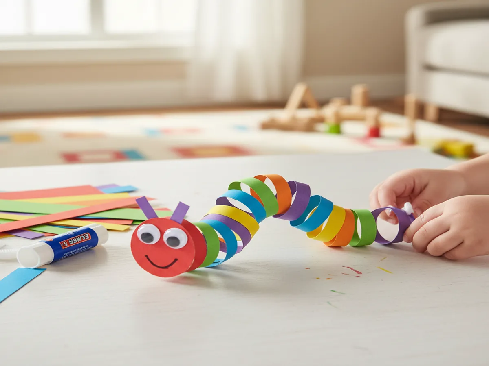
2. Torn Paper Sun
Draw a big circle on yellow paper and let your little one tear strips for the sun rays. Tearing paper is a fantastic activity for developing hand strength, and toddlers absolutely love that they don't need scissors for this one. Glue the rays around the circle and hang your sunshine in a window for instant cheer.
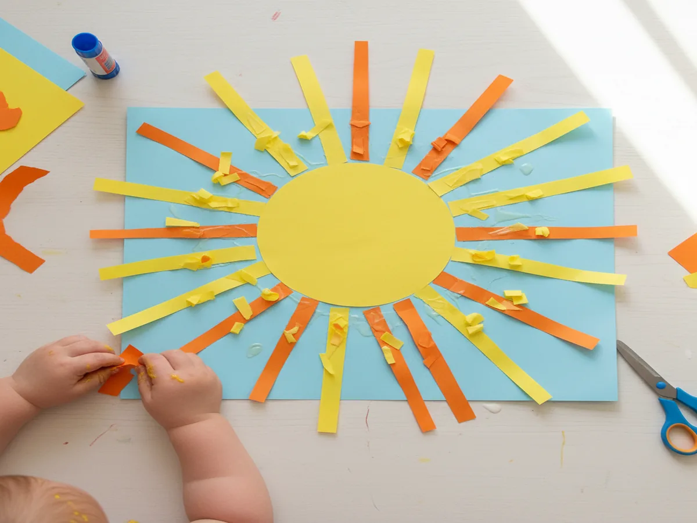
3. Paper Plate Fish (No Plate? Use a Circle!)
Cut a large circle from colored paper, snip out a triangle wedge for the mouth, and glue that wedge on the back as a tail fin. Let kids decorate the body with markers, stickers, or tiny paper scales. It's a quick and easy paper craft for kids that looks impressive with very little effort. Add a drawn-on eye and your fish is ready to swim.
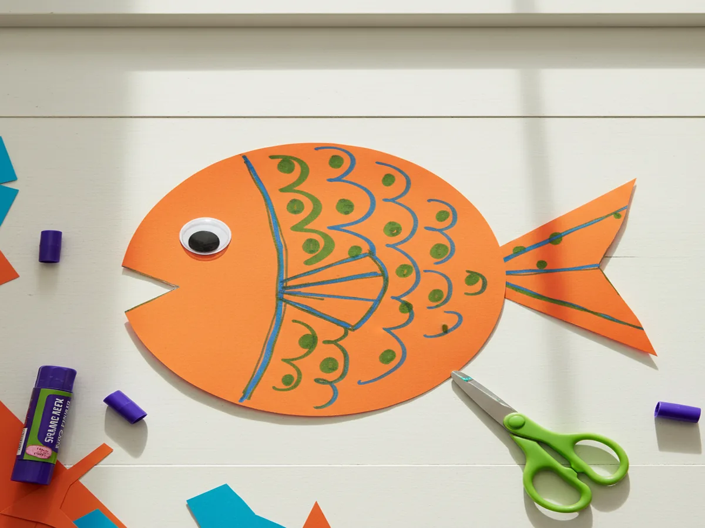
4. Simple Paper Fan
Accordion-fold a sheet of paper, pinch one end, and fan out the other. Kids can decorate their paper before folding it with colorful drawings or stickers. This is a perfect warm-weather craft that they'll actually use afterwards, which makes it extra exciting for little makers.
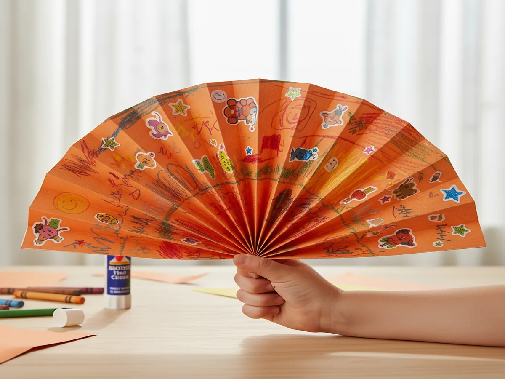
5. Paper Crown
Cut a strip of paper long enough to wrap around your child's head, then cut zigzag points along the top edge. Let your little prince or princess decorate it with markers, gems, or stickers before taping it into a circle. This is one of those fun paper crafts in under 5 minutes that leads straight into hours of imaginative play.
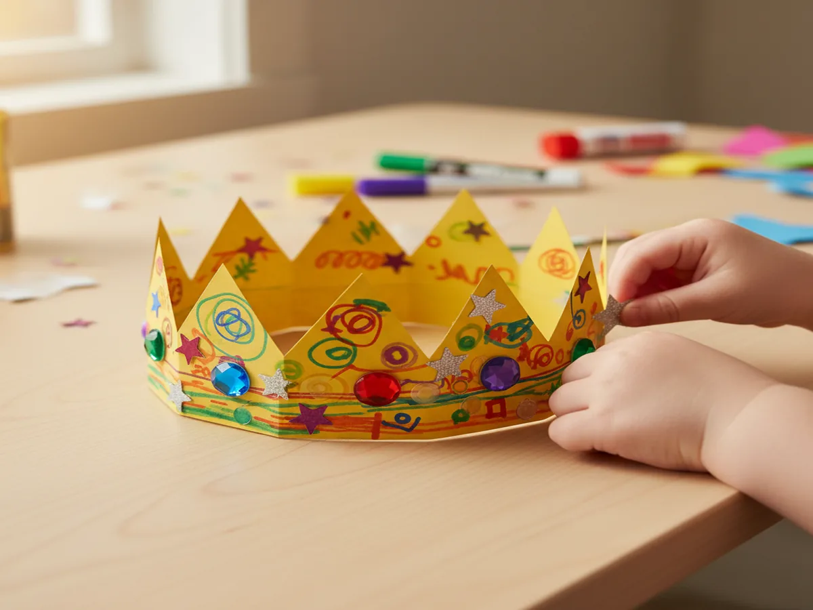
6. Handprint Flowers
Trace your child's hand on colored paper, cut it out, and curl the fingers slightly around a pencil to create petals. Glue the handprint to a green paper stem and add a leaf or two. It makes the sweetest keepsake, and kids beam with pride seeing their own little hand turned into a flower.
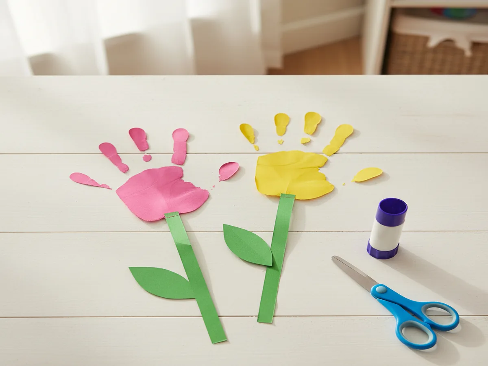
7. Paper Chain Snake
Similar to the caterpillar but longer and slithery! Use alternating colors of paper loops to build a long chain snake. Draw a face on the first link and cut a tiny forked tongue from red paper. Kids love making these as long as possible, and it's a great easy paper craft for preschoolers at home on a rainy afternoon.
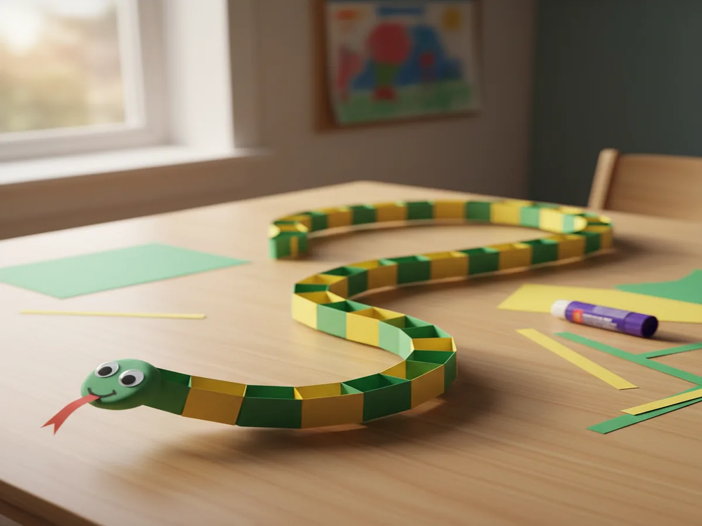
8. Folded Paper Butterfly
Take two small squares of paper, accordion-fold each one, then pinch them together in the middle with a small piece of tape or a pipe cleaner. Fan out the folds to reveal beautiful butterfly wings. Let your child color patterns on the paper before folding for extra personality. It's one of the prettiest 5 minute crafts with paper easy enough for even the youngest crafters.
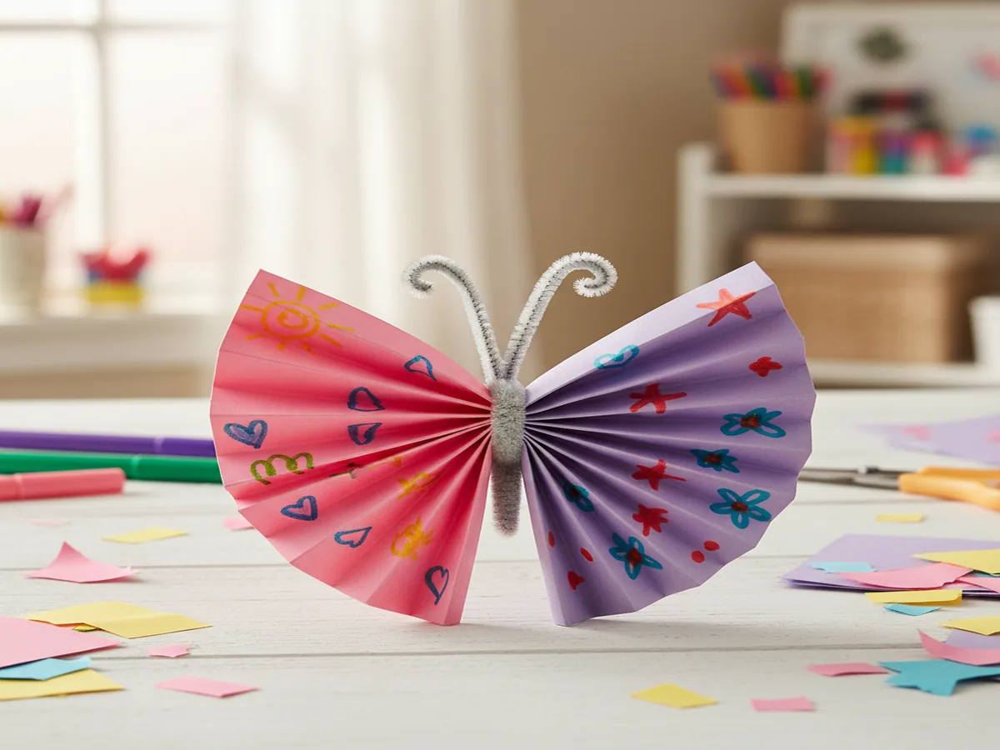
9. Paper Binoculars
Roll two pieces of paper into tubes, tape them side by side, and let your little explorer decorate them with markers or stickers. Punch a hole on each outer side and thread a string through for a neck strap. This craft leads to the most adorable backyard adventures and nature walks.
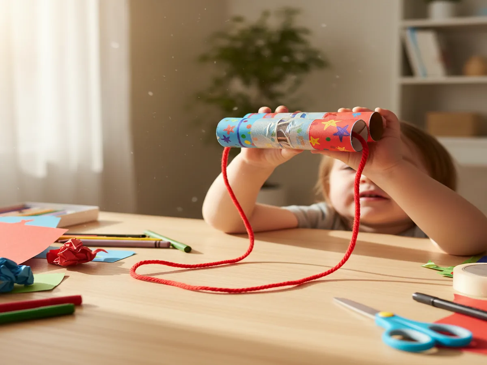
10. Circle Caterpillar Card
Cut several circles in different sizes and colors, then overlap and glue them in a curved line on a folded piece of paper. Add legs, antennae, and a smiley face to the first circle. This makes an adorable homemade card for grandparents or friends. Little ones love that they can practice cutting circles (or tearing them) all on their own.
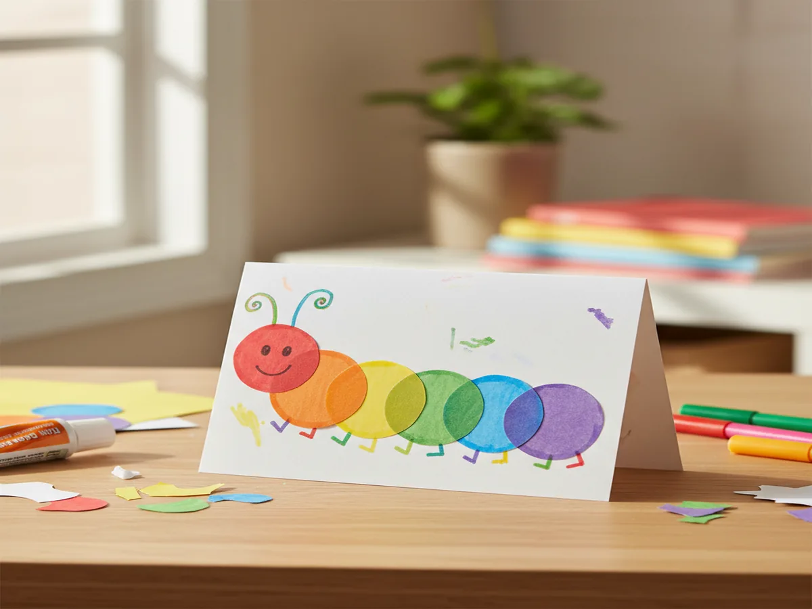
11. Paper Airplane (Toddler Style)
Keep it super simple with a basic two-fold paper airplane. Show your child how to fold and let them decorate it with stickers and crayons before the big launch. The real magic is in the flying and chasing, and you can make a whole fleet in just a few minutes. This is a classic among fast paper crafts kids can make today with zero prep needed.
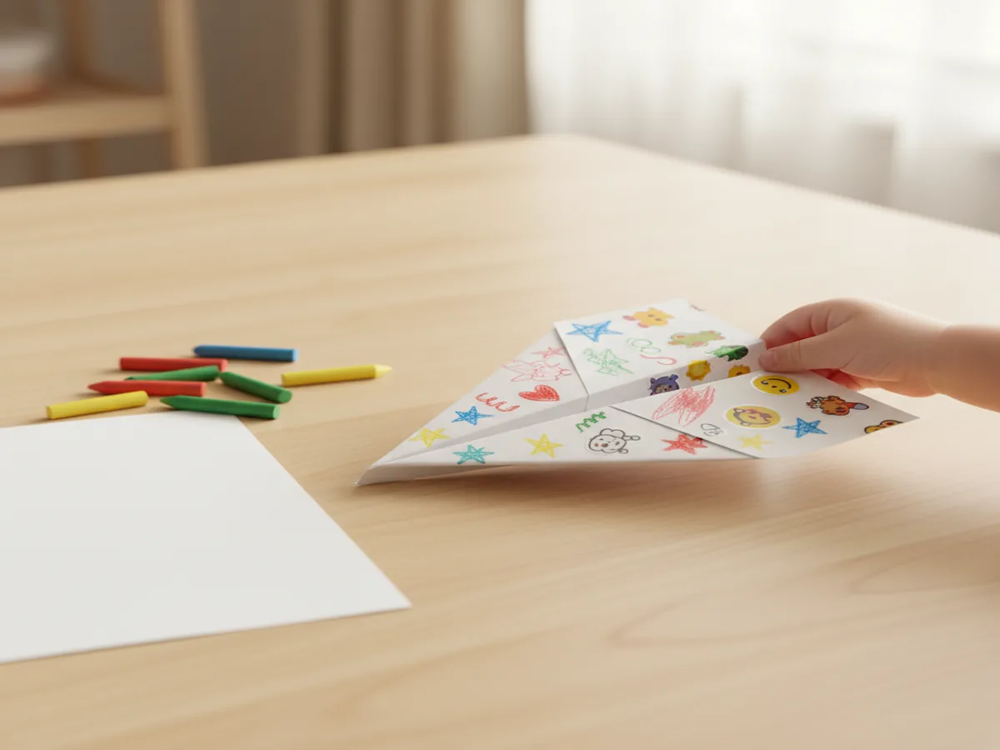
12. Paper Ice Cream Cone
Cut a triangle from brown paper for the cone and circles from colorful paper for the scoops. Glue the scoops stacked on top of the cone and draw sprinkles with markers. Kids can make their favorite flavor combinations, which always sparks the cutest conversations. Add a cotton ball on top for whipped cream if you have one handy.
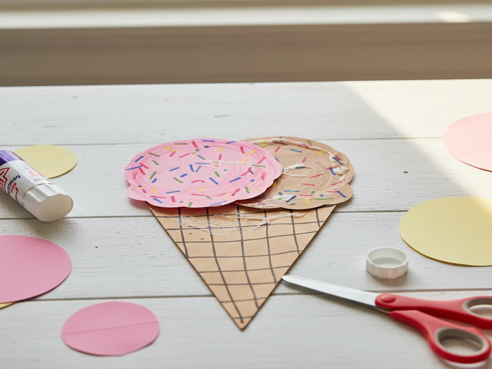
13. Paper Strip Rainbow
Cut strips of paper in red, orange, yellow, green, blue, and purple. Layer and glue them in an arch shape onto a white background. Add cotton ball clouds at each end if you'd like, or just let the rainbow stand on its own. This is a wonderful way to teach colors while making something beautiful together.
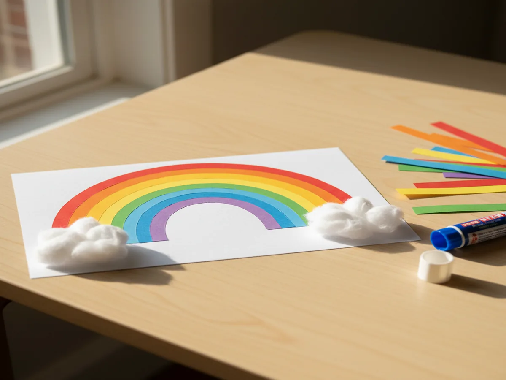
14. Paper Finger Puppets
Cut a small rectangle of paper, roll it into a tube that fits around your child's finger, and tape it closed. Then let kids draw faces, add tiny paper ears, or create any character they can imagine. Make a whole family of puppets and put on a show together. These are truly 5 minute crafts with paper easy enough that even two-year-olds can help decorate them.
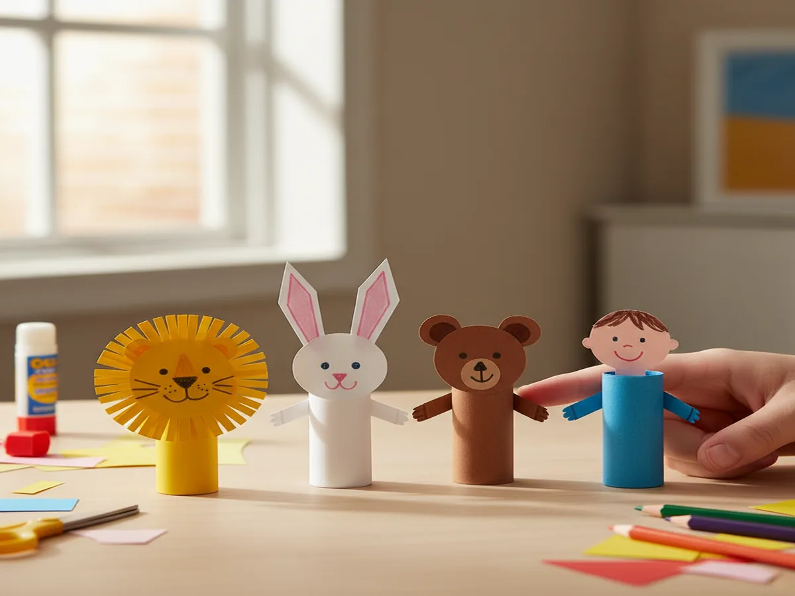
15. Heart Paper Chain Garland
Cut paper strips, fold each one in half, and curl the ends inward to form a heart shape before stapling or taping the bottom. Link them together into a garland that's perfect for decorating a bedroom or playroom. Kids feel so accomplished seeing a long, colorful garland they made all by themselves. It's a sweet way to wrap up this list of quick and easy paper crafts for kids of all ages.
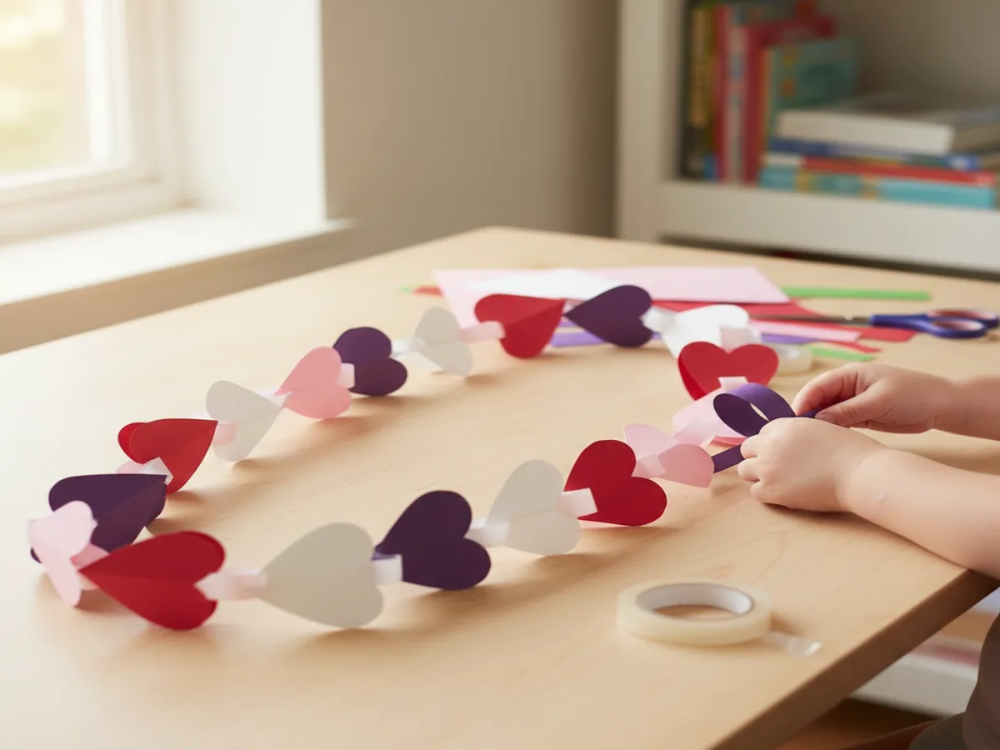
More Crafts You'll Love
If your little ones can't get enough of paper crafting, here are a few more roundups packed with inspiration.
- 20 Adorable Simple Paper Craft Ideas Kids Will Beg to Make Again and Again
- Magical Snowflake Paper Craft for Kids – Easy Winter Fun They'll Want to Make Again and Again!
Final Thoughts
You don't need a Pinterest-perfect setup or an hour of free time to create something special with your kids. Even five minutes of crafting together builds memories, confidence, and so much joy. Grab some paper, pull up a chair with your little one, and enjoy every colorful, slightly crooked, totally wonderful creation you make together.